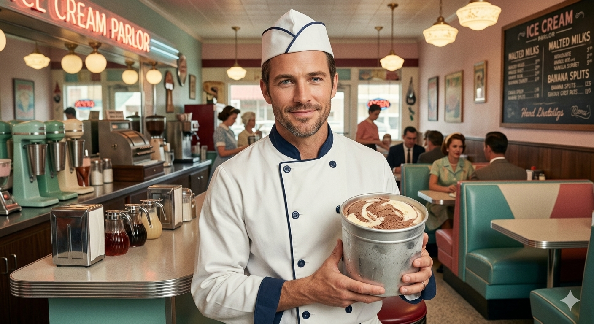

Наша история

С тех пор Scoopscream — это не просто торговая точка, а личный проект всей его жизни. Владелец сам ежедневно заботится о своем ларьке, любовно протирая витрины и украшая его так, будто ждет в гости старых друзей. Он превратил создание десертов в настоящее искусство: каждый новый вкус он придумывает сам, вдохновляясь местными продуктами.
Для него это не бизнес, а способ признаться в любви городу, который стал ему вторым домом, и каждому покупателю он дарит не просто шарик мороженого, а частичку своей большой и доброй истории.
История Scoopscream началась в непростые, но полные надежд 90-е, когда в Россию приехал американец, чье сердце мгновенно покорила открытость и душевность местных жителей. Одинокий мечтатель, он не искал здесь быстрой наживы, а хотел привезти частичку своей культуры, соединив ее с русской искренностью.
Влюбившись в ритм жизни страны, он долго путешествовал, пока в 2000-х не оказался на солнечном побережье Геленджика. Лазурная бухта и сосновый воздух напомнили ему о лучших моментах детства, и именно здесь он решил воплотить свою давнюю мечту — открыть маленький, уютный магазин мороженого, который стал бы местом радости для каждого прохожего.